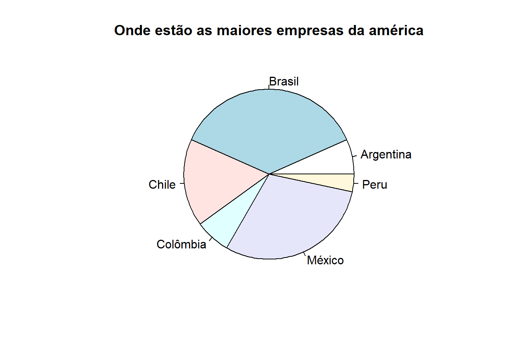
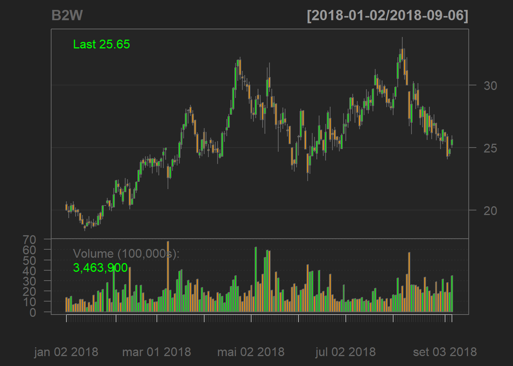
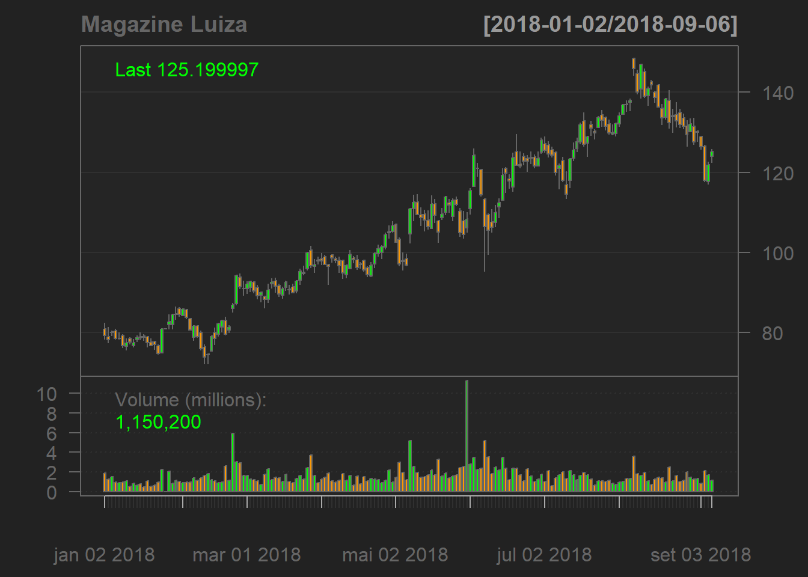
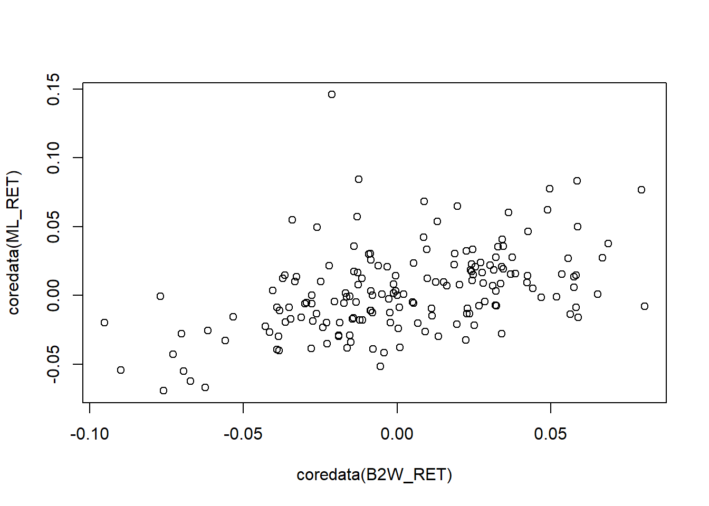
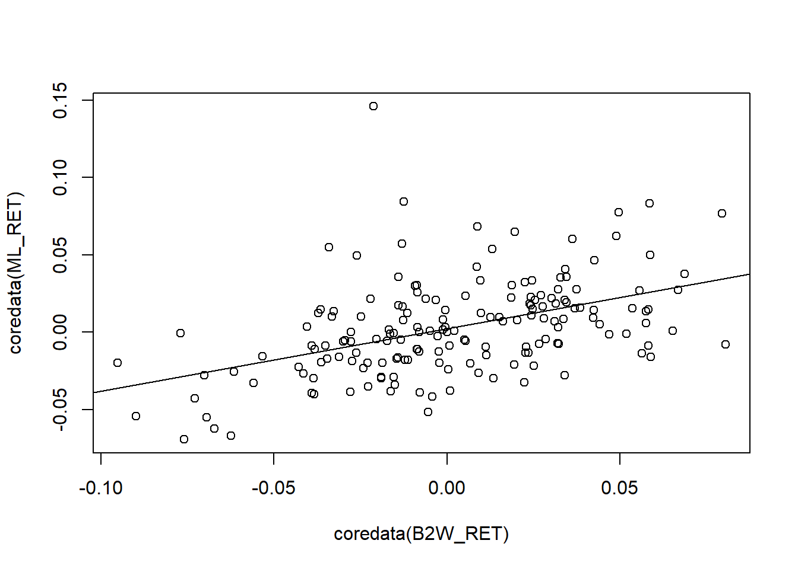
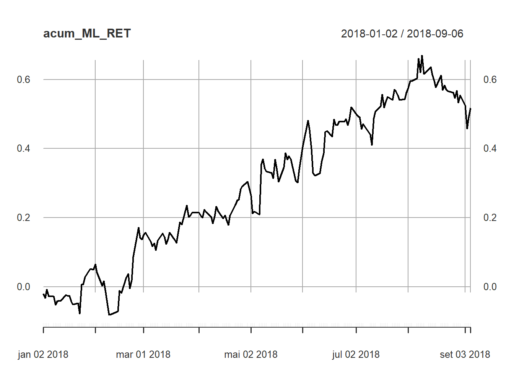
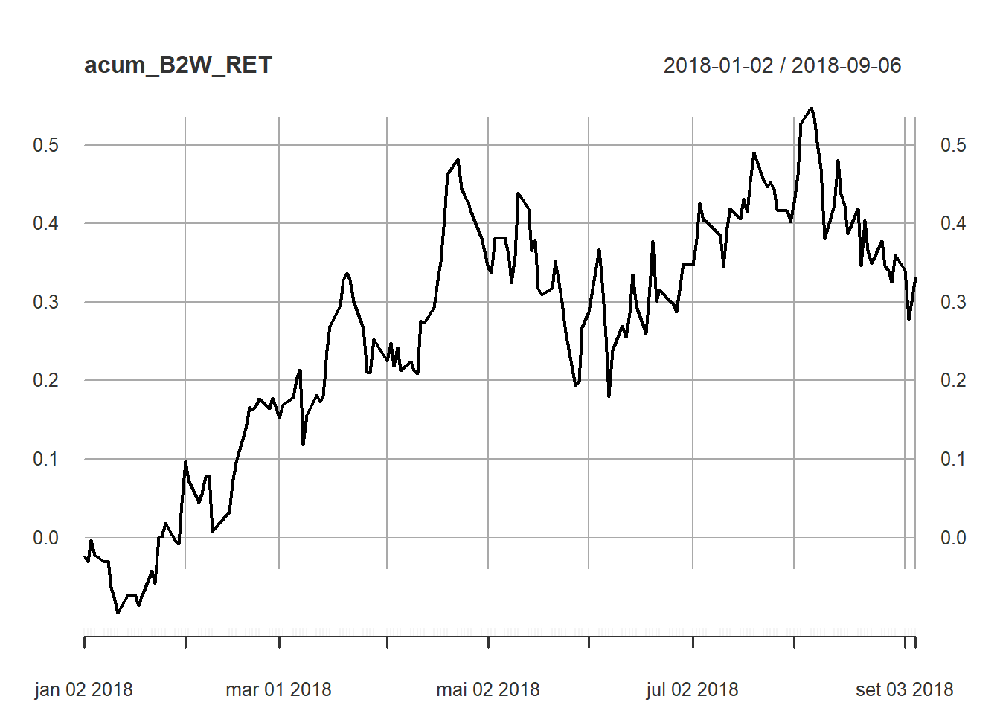

3 Aula 2
3.1 Factor
Na aula 1 quando falamos sobre tipos de variáveis falamos sobre as variáveis categoricas ou variáveis qualitativas ou seja, características dos indivíduos para as quais não é possível atribuir um valor numérico, como sexo, religião, estado civil, opinião sobre algum tema. É possível agrupar os indivíduos em categorias e contar quantos indivíduos pertencem a cada categoria, mas se, por exemplo, um indivíduo afirma ser católico, e outro, protestante, não podemos, com base nessas afirmações, considerar um mais religioso do que o outro.
Logo mais falaremos das categóricas ordenáveis(ordered) um tipo de variável categórica cujas categorias podem ser hierarquizáveis, como grau de escolaridade.
3.1.1 Exemplo 1
Digamos que ao navegar pelos estudos do economatica encontramos essa noticia: 30 maiores empresas de capital aberto da América Latina por receita líquida operacional (Vendas). (link do estudo https://economatica.com/estudos/data/20160513b.pdf) E venha a dúvida, de quais países são essas empresas?
Primeiro temos que importar os dados da pesquisa,
utilizaremos read.csv por que nosso arquivo esta salvo como um arquivo do tipo csv, são arquivos de texto plano, podendo ser visualizados em editores de texto simples porque não contêm qualquer formatação especial, como negrito, itálico, cores, espaçamento entre linhas etc. . . Apesar do nome, devido ao fato da vírgula ser um símbolo comum em textos, inclusive nos valores de variáveis categóricas, e, principalmente, por ser a vírgula o separador de decimais em alguns idiomas, como o português, na prática, é comum encontrar arquivos csv com os campos separados por ponto e vírgula, espaços e caracteres de tabulação. Para eliminar qualquer dúvida sobre o tipo de valor de um campo, se numérico ou textual, costuma-se escrever os valores que devem ser tratados como texto entre aspas, simples ou duplas. é por isso que no excel quando salvamos um arquivo em csv ele acusa que vamos perder algumas informações. Perde-se toda informação sobre formatação das células e sobre fórmulas utilizadas.
#importando os dados
maiores_emp <- read.csv("Pasta1.csv")
maiores_emp## Posicao.Nome.Pais
## 1 1;Petrobras;Brasil
## 2 2;America Movil;México
## 3 3;JBS;Brasil
## 4 4;Wal Mart de Mexico;México
## 5 5;Vale;Brasil
## 6 6;Ultrapar;Brasil
## 7 7;Copec;Chile
## 8 8;Formento Econ Mex;México
## 9 9;P. Açucar-Cbd;Brasil
## 10 10;Ecopetrol;Colômbia
## 11 11;Cencosud;Chile
## 12 12;Alfa;México
## 13 13;Cemex;México
## 14 14;Bimbo;México
## 15 15;Braskem;Brasil
## 16 16;Ambev S/A;Brasil
## 17 17;Ypf;Argentina
## 18 18;Gerdau;Brasil
## 19 19;Falabella;Chile
## 20 20;Exito;Colômbia
## 21 21;Telef Brasil;Brasil
## 22 22;Lan Chile;Chile
## 23 23;Coca Cola Femsa;México
## 24 24;Eletrobas;México
## 25 25;BRF S.A;Brasil
## 26 26;G.Mexico;México
## 27 27;Tenaris S.A.;Argentina
## 28 28;Oi;Brasil
## 29 29;Inretail Peru Corp. ;Peru
## 30 30;Enersis-Am;ChileObserve que o R reconheceu as linhas mas não separou as colunas,
nrow(maiores_emp) #numero de linhas## [1] 30ncol(maiores_emp) #numero de colunas## [1] 1porém olhe isto - 1;Petrobras;Brasil - 1 deveria estar na coluna posição, petrobras na coluna nome e Brasil na coluna país, os três termos estão separados por ponto e virgula e é exatamente isso que vamos dizer ao R agora.
maiores_emp <- read.csv("Pasta1.csv", sep = ";", header = T)Alguns separadores usados são a virgula, o ponto e virgula, TAB e o Espaço. o argumento sep indica qual o separador do arquivo. Lembrando que o separador deve estar entre aspas.
O argumento header=TRUE informa que os dados possuem cabeçalho, ou seja, a primeira linha contém os nomes dos atributos (variáveis) e a primeira coluna possui o nome das amostras.
#visualizando o objeto maiores_emp
maiores_emp## Posicao Nome Pais
## 1 1 Petrobras Brasil
## 2 2 America Movil México
## 3 3 JBS Brasil
## 4 4 Wal Mart de Mexico México
## 5 5 Vale Brasil
## 6 6 Ultrapar Brasil
## 7 7 Copec Chile
## 8 8 Formento Econ Mex México
## 9 9 P. Açucar-Cbd Brasil
## 10 10 Ecopetrol Colômbia
## 11 11 Cencosud Chile
## 12 12 Alfa México
## 13 13 Cemex México
## 14 14 Bimbo México
## 15 15 Braskem Brasil
## 16 16 Ambev S/A Brasil
## 17 17 Ypf Argentina
## 18 18 Gerdau Brasil
## 19 19 Falabella Chile
## 20 20 Exito Colômbia
## 21 21 Telef Brasil Brasil
## 22 22 Lan Chile Chile
## 23 23 Coca Cola Femsa México
## 24 24 Eletrobas México
## 25 25 BRF S.A Brasil
## 26 26 G.Mexico México
## 27 27 Tenaris S.A. Argentina
## 28 28 Oi Brasil
## 29 29 Inretail Peru Corp. Peru
## 30 30 Enersis-Am Chile#visualizando o tipo do objeto
class(maiores_emp)## [1] "data.frame"maiores_emp é um objeto do tipo data.frame, isso quer dizer que maiores_emp é um objeto que possui linhas e colunas (observações nas linhas e variáveis (atributos) nas colunas). Assim como uma matrix, todas as colunas de um data.frame têm que ter o mesmo número de elementos, mas, ao contrário de uma matrix, um data.frame pode conter colunas de tipos diferentes, com variáveis numéricas, categóricas, booleanas etc. Todas as operações válidas para vetores também podem ser aplicadas às colunas de um data.frame e todas as formas de acessar valores em uma matrix são validos para o data.frame.
class(maiores_emp$Pais)## [1] "factor"class(maiores_emp$Nome)## [1] "factor"class(maiores_emp$Posicao)## [1] "integer"Até aqui,sempre que precisamos fazer referência a uma variável de um banco de dados, usamos a notação maiores_empcifrãoPias, onde maiores_emp representa um data.frame e Pais uma de suas colunas ou variáveis. A função attach() permite fazer referência a uma variável de um banco de dados diretamente, sem o prefixo maiores_empcifrão. Ao digitarmos attach(maiores_emp), o R faz cópias das variáveis de maiores_emp que, embora não sejam exibidas pela função ls(), podem ser acessadas pelas demais funções. O inconveniente de usar attach() durante o processo de manipulação dos dados decorre do fato de alterações nos objetos anexados à área de trabalho não se refletirem nas variáveis do data.frame() e vice-versa. Seria preciso usar, constantemente, a função detach() para desanexar os objetos anexados pela última chamada a attach().
attach(maiores_emp)## The following objects are masked from maiores_emp (pos = 3):
##
## Nome, Pais, Posicao## The following objects are masked from maiores_emp (pos = 4):
##
## Nome, Pais, Posicao## The following objects are masked from maiores_emp (pos = 5):
##
## Nome, Pais, Posicao## The following objects are masked from maiores_emp (pos = 6):
##
## Nome, Pais, Posicao## The following objects are masked from maiores_emp (pos = 7):
##
## Nome, Pais, Posicao## The following objects are masked from maiores_emp (pos = 8):
##
## Nome, Pais, Posicao## The following objects are masked from maiores_emp (pos = 9):
##
## Nome, Pais, Posicao## The following objects are masked from maiores_emp (pos = 10):
##
## Nome, Pais, Posicao## The following objects are masked from maiores_emp (pos = 11):
##
## Nome, Pais, Posicao## The following objects are masked from maiores_emp (pos = 18):
##
## Nome, Pais, Posicaofactor(Pais)## [1] Brasil México Brasil México Brasil Brasil Chile
## [8] México Brasil Colômbia Chile México México México
## [15] Brasil Brasil Argentina Brasil Chile Colômbia Brasil
## [22] Chile México México Brasil México Argentina Brasil
## [29] Peru Chile
## Levels: Argentina Brasil Chile Colômbia México Perustr(Pais)## Factor w/ 6 levels "Argentina","Brasil",..: 2 5 2 5 2 2 3 5 2 4 ...levels(Pais)## [1] "Argentina" "Brasil" "Chile" "Colômbia" "México" "Peru"summary(Pais)## Argentina Brasil Chile Colômbia México Peru
## 2 11 5 2 9 1pie(summary(Pais), main="Onde estão as maiores empresas da américa")
3.2 Pacotes (packages)
O R é um programa leve (ocupa pouco espaço e memória) e geralmente roda rápido, até em computadores não muito bons. Isso porque ao instalarmos o R apenas as configurações mínimas para seu funcionamento básico são instaladas (pacotes que vem na instalação “base”). Para realizar tarefas mais complicadas pode ser necessário instalar pacotes adicionais (packages). Existem vários pacotes, para diferentes áreas. Para os economistas, além do pacote de econometria, os pacotes de Time Series, Bayesian, Finance, Machine Learning podem ser de interesse.
O R também pode conectar-se diretamente à internet. Desta forma é possível, instalar e atualizar pacotes sem que seja necessário acessar a página do R.
O grande atrativo do R são os pacotes. Para instalar um pacote, basta digitar no console: install.packages(“nome-do-pacote”)
Um pacote bastante utilizado em finanças é o quantmod.
3.2.1 exemplo 2
#instalando o pacote
install.packages("quantmod")Não basta apenas instalar um pacote. Para usá-lo é necessário “carregar” o pacote sempre que você abrir o R e for usá-lo. Use a função library para rodar um pacote.
#carregando o pacote
library(quantmod)Após isso as funcionalidades do quantmod estarão prontas para serem usadas. Lembre-se que sempre que abrir o R será necessário carregar o pacote novamente.
Vamos agora testar algumas funcionalidades desse pacote (quantmod).
getSymbols("BTOW3.SA", src = "yahoo", from= "2018-01-01", to="2018-09-08" )## [1] "BTOW3.SA"getSymbols("MGLU3.SA", src = "yahoo", from= "2018-01-01", to="2018-09-08" )## [1] "MGLU3.SA"candleChart(BTOW3.SA, name = "B2W")
candleChart(MGLU3.SA, name = "Magazine Luiza")
getSymbols() e candleChart() são funções do pacote quantmod. Caso você tenha interesse em melhorar o gráfico você pode buscar o Help do R.
Para ver os arquivos de ajuda do R use o comando help(nome.da.função) ou ?nome.da.funcão.
Geralmente, o arquivo de help do R possui 10 tópicos básicos: 1 - Description - faz um resumo geral sobre o uso da função 2 - Usage - mostra como a função deve ser utilizada e quais argumentos podem ser especificados 3 - Arguments - explica o que é cada um dos argumentos 4 - Details - explica alguns detalhes sobre o uso e aplicação da função (geralmente poucos) 5 - Value - mostra o que sai no output após usar a função (os resultados) 6 - Note - notas sobre a função 7 - Authors - lista os autores da função (quem escreveu os códigos em R) 8 - References - referências para os métodos usados 9 - See also - mostra outras funções relacionadas que podem ser consultadas 10 - Examples - exemplos do uso da função. Copie e cole os exemplos no R para ver como funciona
O manual completo do R e dos pacotes adicionais instalados pode ser acessado com a função help.start().Mas há várias outras formas de se obter ajuda no uso do R. Uma delas é pela chamada à função args(), que lista os argumentos recebidos por uma função, como no exemplo abaixo,
args(candleChart)## function (x, subset = NULL, type = "candlesticks", show.grid = TRUE,
## name = deparse(substitute(x)), time.scale = NULL, log.scale = FALSE,
## TA = "addVo()", theme = chartTheme("black"), major.ticks = "auto",
## minor.ticks = TRUE, color.vol = TRUE, multi.col = FALSE,
## ...)
## NULLO comando args(candleChart) informa que a função candleChart recebe varios argumentos. Cada argumento é separado do outro por uma vírgula. A presença de “. . .” na lista de argumentos de algumas funções significa que a função poderá receber um número indefinido de argumentos.Muitas vezes, esses argumentos são repassados para outras funções chamadas internamente.
Alguns comandos possuem argumentos opcionais; outros são obrigatórios e, se não forem fornecidos, os comandos não funcionarão. Não há nenhuma diferença formal entre argumentos obrigatórios e opcionais e, portanto,somente tentando executar a função,ou lendo a sua documentação, saberemos se um determinado argumento é obrigatório ou não. Por exemplo, ao tentarmos executar a função setwd() sem nenhum argumento, ocorre um erro, ficando claro que o argumento é obrigatório.
setwd()
##Error in setwd() : argument "dir" is missing, with no defaultEm caso de dúvida, digite ?nome_da_função para obter a ajuda necessária.
digamos que queremos saber se existe alguma relação entre a o retorno diário da b2w o retorno diario da magazine luiza.
#calculando o retorno diário
B2W_RET <- dailyReturn(BTOW3.SA)
ML_RET <- dailyReturn(MGLU3.SA)
#visualizando o numero de observações
length(B2W_RET)## [1] 172length(ML_RET)## [1] 172#visualizando graficamente o valores dos retornos
plot(coredata(B2W_RET),coredata(ML_RET) )
Agora devemos rodar a regressão,lm que Cria um modelo linear que pode ser utilizado para regressão linear, análise de variância entre outros. sintaxe- lm(formula, dados, opções)
Parâmetros formula- Especifica a relação entre a variável resposta e a variável explicativa. Ver exemplos. dados- Objeto do tipo data.frame que contém os dados.
#regressão
relacao <- lm(ML_RET~B2W_RET)Uma das funções mais usadas é summary() que, de um modo bastante sucinto, apresenta informações sobre um objeto. Trata-se de uma função genérica que possui um método diferente para diferentes tipos de objetos. Ou seja, o sumário apresentado tem uma formatação que depende da classe do objeto. summary() resumo dos dados apresentando seis medidas de posição que descrevem os dados (os valores mínimo e máximo, a média e a mediana, o primeiro e o terceiro quartis).
summary(ML_RET)## Index daily.returns
## Min. :2018-01-02 Min. :-0.0693606
## 1st Qu.:2018-03-05 1st Qu.:-0.0170419
## Median :2018-05-07 Median : 0.0004183
## Mean :2018-05-06 Mean : 0.0030128
## 3rd Qu.:2018-07-07 3rd Qu.: 0.0188337
## Max. :2018-09-06 Max. : 0.1459990Utilizando o comando summary podemos obter um resumo da regressão.
#output da regressão
summary(relacao)##
## Call:
## lm(formula = ML_RET ~ B2W_RET)
##
## Residuals:
## Min 1Q Median 3Q Max
## -0.051760 -0.017057 -0.001738 0.012475 0.152297
##
## Coefficients:
## Estimate Std. Error t value Pr(>|t|)
## (Intercept) 0.002233 0.002112 1.057 0.292
## B2W_RET 0.403576 0.059978 6.729 2.51e-10 ***
## ---
## Signif. codes: 0 '***' 0.001 '**' 0.01 '*' 0.05 '.' 0.1 ' ' 1
##
## Residual standard error: 0.02766 on 170 degrees of freedom
## Multiple R-squared: 0.2103, Adjusted R-squared: 0.2057
## F-statistic: 45.28 on 1 and 170 DF, p-value: 2.508e-10##
plot(coredata(B2W_RET),coredata(ML_RET) )
relacao <- lm(ML_RET~B2W_RET)
abline(relacao)
#retornos acumulados
#retornos acumulados
acum_ML_RET <- cumsum(ML_RET)
plot(acum_ML_RET)
acum_B2W_RET <- cumsum(B2W_RET)
plot(acum_B2W_RET)
3.3 Referências
Introdução ao uso do programa R - INPA PPGE - Victor lemes Landeiro
R para cientistas sociais - Jackson Alves de Aquino
Introdução à Linguagem R para Pós-Graduandos em Ecologia e áreas afins - http://ecologia.ib.usp.br/bie5782/doku.php?id=start
Introductory Statistics with R - Peter Dalgaard
R Core Team (2018). R: A language and environment for statistical computing. R Foundation for Statistical Computing, Vienna, Austria. URL https://www.R-project.org/.